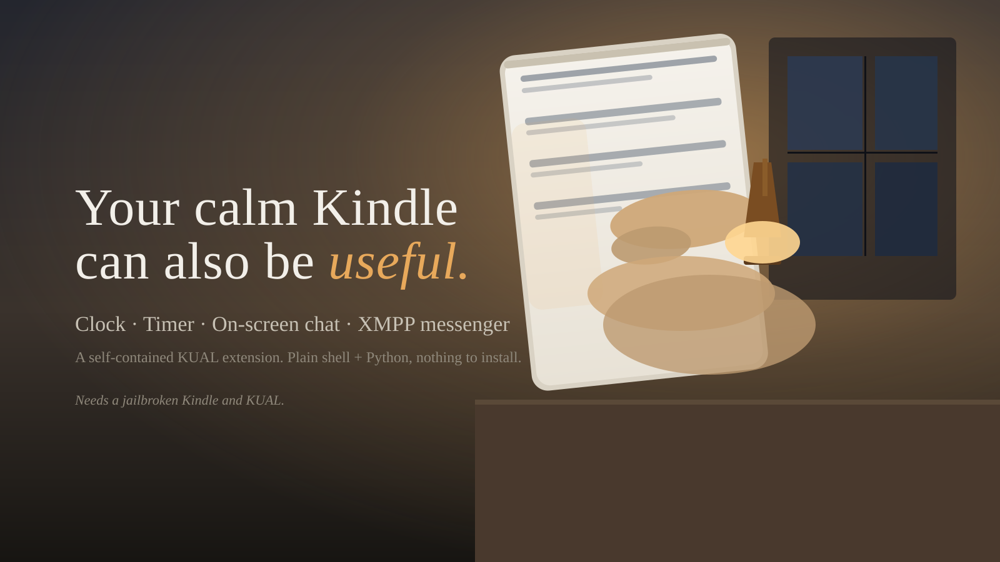

Clock
A big, readable 24-hour (or 12-hour) digital clock. It avoids burn-in with a full screen refresh every minute and clears on Home.
Always available Read more
PhoneKit is a self-contained KUAL extension that turns a jailbroken Kindle into a clock, a countdown timer, an on-screen chat with any OpenAI-compatible endpoint, and an XMPP messenger. It is built from plain shell and Python with nothing to install.
Needs a jailbroken Kindle and KUAL. A focused toolset, not a phone replacement.
A Kindle is a quiet surface. It reads, and then it waits. PhoneKit adds a small set of focused tools that stay on that same screen. No bloat, no noise.
A big, readable 24-hour (or 12-hour) digital clock. It avoids burn-in with a full screen refresh every minute and clears on Home.
Always available Read moreA full-screen countdown timer. The Kindle has no speaker, so when time runs out it flashes the whole screen instead of beeping.
No speaker needed Read moreChat with any OpenAI-compatible endpoint right on the Kindle. Ollama, llama.cpp, vLLM, OpenAI, or OpenRouter. Set the URL, model, and optional key in one config file.
OpenAI-compatible Read moreOpen Monocles or Cheogram in the browser, or run the optional on-screen bridge that connects to your XMPP server over TLS, authenticates with SCRAM-SHA-1, and flashes incoming messages.
TLS + SCRAM-SHA-1 Read morePaste a URL, the Kindle fetches it, strips the page down to readable text, and renders it large on the e-ink screen. Optional LLM summary when an API is configured.
Local web app Read moreA feed reader that keeps a plain list of URLs, fetches them on demand, caches items, and renders each article as clean, large-font text.
Local web app Read moreA tiny notes/todo list stored in one plaintext file. Add a note or todo, tick todos done, delete lines. Everything survives a reboot.
Local web app Read moreAn at-a-glance dashboard: a big clock and date plus whatever your own JSON endpoint reports, such as uptime, disk, or temperature. Refresh from the menu or on a schedule.
Local web app Read moreRenders any text, such as a Wi-Fi join string, a vCard contact, or a URL, as a QR code directly on the e-ink screen with a pure-Python encoder. Point your phone at the screen to pair.
Pure-Python encoder Read morePhoneKit is a single removable folder. Everything is plain shell and Python from the standard library. No compiled code, no package to install, and removing it is deleting the folder.
Jailbreak your Kindle for your firmware and install the KUAL launcher (kindle-mobile). KUAL is how the extension is launched.
Copy the phonekit folder to /mnt/us/extensions/phonekit. Eject, re-mount, and open KUAL. You will see the PhoneKit menu.
Set your LLM URL and model, XMPP JID and password, and any web-app settings in the config.env files. Plain KEY="value" lines.
Start the clock, the timer, the chat, or the bridge. Everything runs from the menu.
It needs a jailbroken Kindle and KUAL. If you run KUAL, it is a five-minute install. Everything lives in one folder and is gone when you delete that folder.